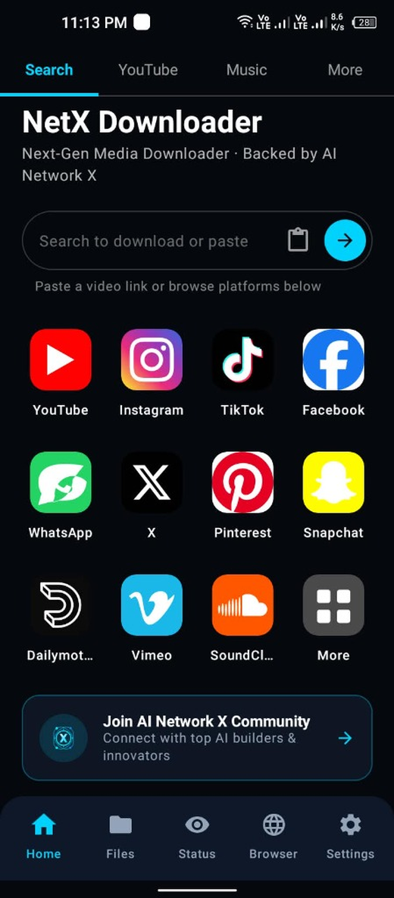
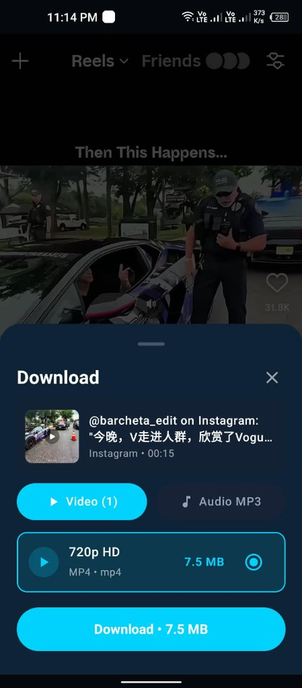
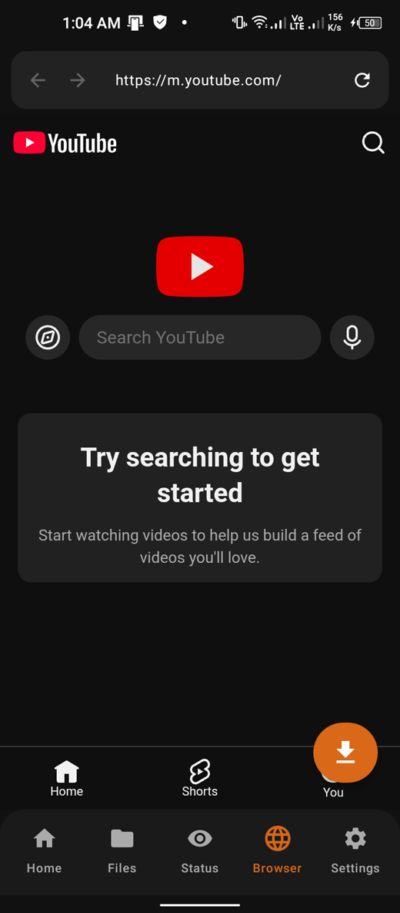
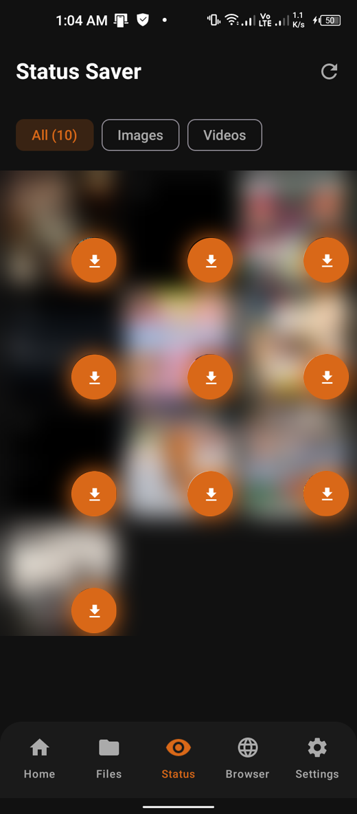
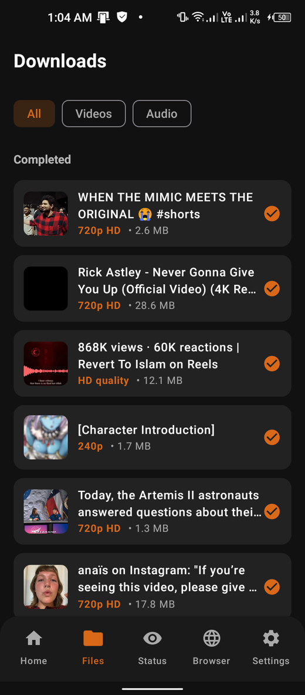
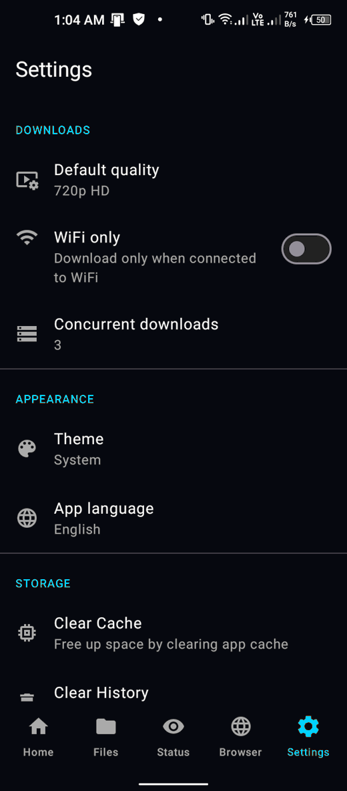

Every quality on the table
Audio only, in one tap
Grab podcasts, lectures and music as clean MP3 or M4A files without downloading the video stream you were not going to watch.
Paste a link, pick the quality you want, and the file lands in your gallery — full resolution, sound intact, no watermark stamped over it. YouTube, Instagram, TikTok, Facebook, X and a thousand other sites, from one small Android app.


Works with the places you actually watch things
No pop-ups on top of your video, no "premium" wall in front of 1080p, no watermark burned into the corner of a file you saved.
Grab podcasts, lectures and music as clean MP3 or M4A files without downloading the video stream you were not going to watch.
Open Instagram or Facebook inside the app, log in once, and a download button appears over the reels only your account can see. The session stays on your phone.
The Status tab lists every photo and video you have already viewed and saves the ones you want to keep, long after the 24-hour window has closed.
Finished videos are written to DCIM/NetXDownloader and audio to Music/NetXDownloader, so your normal gallery and music player pick them up with nothing to export.
The app keeps its own downloader up to date quietly in the background, so a platform changing its player does not leave you waiting for a new version.
Hit share inside YouTube, TikTok or Instagram, choose NetX Downloader, and the quality sheet opens on top of whatever you were doing. No copy-paste round trip.
Downloads carry on with the app closed and the progress in your notification shade. Queue several, put the phone in your pocket, come back to finished files.
No ads, no trackers, no analytics. What you download stays on your phone — the only thing the app ever sends is a message you typed yourself.
Real screens from version 1.0.7, on a real phone.




Copy the address of the video and tap paste, or use the share button inside the other app and pick NetX Downloader. The in-app browser counts too.
A sheet slides up with every resolution the site offers and the size of each. Choose video, or choose audio only.
The download runs in the background and the finished file appears in DCIM/NetXDownloader — playable in any app, yours to keep or share.
NetX Downloader is not on Google Play — Play's rules do not allow apps that save videos from the big platforms — so it is installed from the file on this page.
Tap the button on this page. Your browser will warn you that APKs can be harmful — that warning appears for every APK, not just this one.
Open the downloaded file. Android asks whether your browser or file manager may install apps; grant it for that app, and it applies to this install only.
Press Install, then Open. Play Protect may offer to scan it; letting it scan is fine.
On first launch the app asks for media access. It needs that to write finished downloads into your gallery and to list WhatsApp statuses.
| What you saved | Folder on the phone |
|---|---|
| Video | DCIM/NetXDownloader |
| Audio only | Music/NetXDownloader |
| Saved WhatsApp status | DCIM/NetXDownloader |
You can point the app somewhere else in Settings → Download folder.
Build you are installing. Version 1.0.7, about 71.8 MB, published 1 September 2026. Android 7.0 and newer, on arm64 and 32-bit ARM phones.
YouTube (standard videos, Shorts, community audio), Instagram (reels, posts, stories when signed in), TikTok (with or without watermark), Facebook (public reels and watch videos), X / Twitter, Pinterest, and direct video links from hundreds of other sites supported by the underlying engine.
Play's developer policy prohibits apps that download video from YouTube and several other platforms. Any app in the store with this feature has it hidden or has had it removed. Distributing the APK directly is the honest way to ship it.
It is the original file, signed by the developer, with no ads, trackers or analytics inside, and it asks only for the permissions listed in the privacy policy. Take it from this page rather than a mirror site, and let Play Protect scan it if it offers.
Video into DCIM/NetXDownloader, audio into Music/NetXDownloader. Both are ordinary public folders, so your gallery and music player see the files immediately. You can change the folder in Settings.
It can save what your own account is allowed to watch. Sign in inside the app's browser, open the post, and the download button works on it. Nothing that is hidden from you becomes visible, and your login stays on your phone.
It offers whatever the source publishes. If a video exists in 4K, 4K is in the list; if the uploader only ever published 720p, no app can invent more.
WhatsApp keeps statuses in a hidden folder that Android's normal media access will not show. That one permission is the only way to list them. Decline it and everything except the Status tab still works.
It depends entirely on what you download. Your own uploads, content whose owner allowed it, public-domain material and private copies permitted where you live are fine. Re-publishing someone else's work is not, and no app changes that. The terms spell this out.
Check this page now and then and install the newer APK over the old one — your downloads and settings are kept.
Platforms change their players without warning and a feature can break for a few days. Join the AI Network X Community with the link that failed and your Android version.
One file, no account, no strings. Install it and paste your first link a minute from now.
Version 1.0.7 · Android 7.0+ · published 1 September 2026 · free
Live streams while they are still live, videos behind a paid wall, and anything protected by DRM (Netflix, Prime Video and their kind) are out of reach — by design, not by oversight. A very long video needs patience and free storage. Some sites break for a while after they change their player.
NetX Downloader is developed and backed by AI Network X. Connect with our community, get tool updates, or join fellow builders on the AI Network X community.